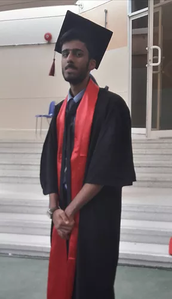

ABOUT ME |
||
| Hey there! I’m Adam Ahsan a CS sophomore currently following my dream at UOWD. When I am not rushing assignments right before the deadline (like this one :), you can find me and my group of friends working on a lot of cool projects such as creating a game or developing our discord bot and in terms of solo projects I really enjoy doing digital art and tend to work on it very seriously, I’ve dedicated a lot of my free time to perfecting my artistic touch. My goal is to try out everything related to computer science right before I get out into the real world. |  | |

|

|